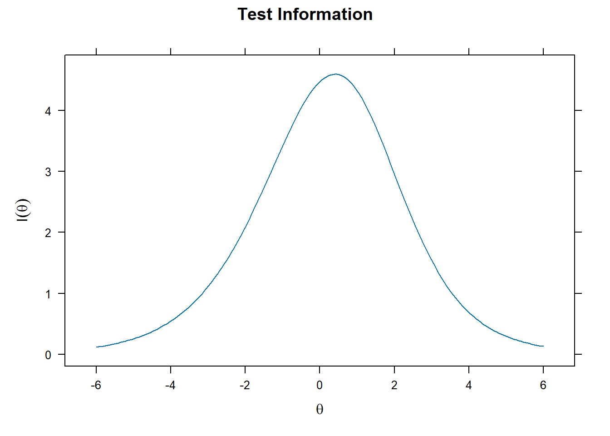
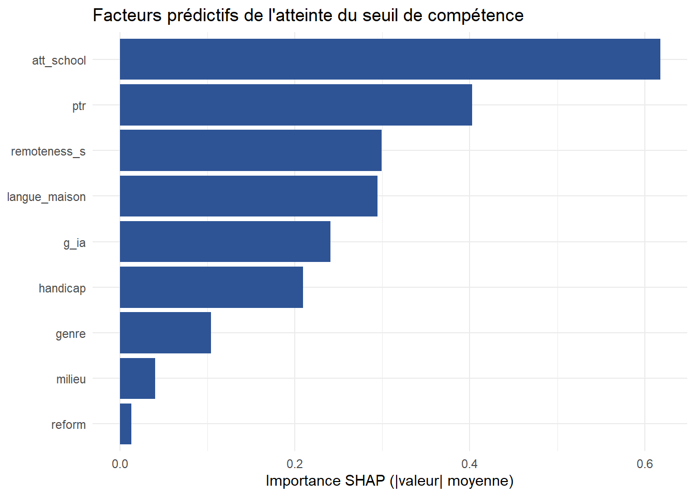

# Reproducibility: package versions are pinned via renv (renv.lock) and captured
# by sessionInfo() at the end. Every stochastic step is seeded.
library(dplyr)
library(tidyr)
library(readr)
library(ggplot2)
library(mirt) # IRT calibration + model-based DIF (multipleGroup, DIF)
library(difR) # DIF triangulation with effect sizes + ETS/Zumbo classification
library(knitr)
set.seed(54)Série Sénégal — Volet 4 : acquis scolaires (mesure et équité)
Calibration IRT, fonctionnement différentiel d’items (DIF) et désagrégation — avant / après traitement du biais de mesure
R
psychometrics
IRT
DIF
measurement-invariance
equity
inclusion
education
Senegal
Quatrième volet analytique et pièce psychométrique centrale de la série. À partir du niveau latent des écoles du socle, il simule les réponses d’élèves à un test de type PASEC (lecture + mathématiques), dans lequel un fonctionnement différentiel d’items (DIF) est délibérément injecté — par langue maternelle, genre et situation de handicap — afin d’en démontrer la détection et le traitement. Le notebook calibre un modèle IRT 2PL, vérifie le modèle (dimensionnalité, ajustement des items, information, ajustement des personnes), puis conduit une analyse DIF à l’état de l’art : sélection d’ancrages par purification, distinction DIF uniforme / non uniforme, contrôle des tests multiples (FDR), tailles d’effet et classification ETS, triangulation IRT ↔︎ régression logistique. Il démontre enfin que l’écart d’équité mesuré CHANGE selon que le DIF est ignoré ou traité. Ce fichier couvre la partie « mesure » ; la partie ML + interprétabilité (SHAP) fait l’objet du script Python associé.
1 Compréhension du volet
Le réflexe naturel, devant des données d’acquis, est de comparer les scores moyens entre groupes — filles/garçons, urbain/rural, francophones/non-francophones — et d’en conclure à des inégalités. Ce réflexe est dangereux tant qu’une question préalable n’a pas été tranchée : le test mesure-t-il la même chose, de la même façon, dans chaque groupe ? Si un item est plus difficile pour les non-francophones à niveau réel égal (parce que son énoncé est verbalement chargé, par exemple), l’écart observé mélange deux choses radicalement différentes : un écart réel de compétence (l’« impact ») et un artefact de mesure (le « fonctionnement différentiel d’item », ou DIF).
Distinguer les deux n’est pas un raffinement académique : c’est ce qui sépare un diagnostic d’équité défendable d’un diagnostic trompeur. Ce volet fait donc les choses dans l’ordre : établir la qualité de mesure (calibration IRT), tester le DIF avant toute comparaison, puis montrer que la conclusion d’équité dépend de ce traitement. C’est précisément la valeur qu’un profil psychométrique apporte là où une lecture purement descriptive dérape.
ImportantNotification — variables injectées à des fins de démonstration
Deux éléments sont simulés et injectés dans ce volet, et doivent être lus comme tels :
- Le DIF est délibérément introduit sur quelques items (par langue maternelle, genre et handicap), afin de démontrer qu’on sait le détecter et le traiter. La valeur du volet est la chaîne d’inférence, non une découverte empirique.
- La situation de handicap est une variable ajoutée localement au volet 4, absente du socle de la série. Sa prévalence, son déficit de réussite et son DIF d’accessibilité sont des paramètres de simulation, indiqués explicitement ci-dessous. Cette dimension permet d’appliquer enfin la désagrégation « inclusion », mais elle ne provient pas des données partagées de la série.
2 Génération des données élèves et des réponses
Le socle fournit le niveau latent des écoles (ability_school). Le volet en dérive un niveau latent d’élève (theta), puis des réponses à 24 items dichotomiques sous un modèle 2PL. On sépare soigneusement deux mécanismes :
- l’impact — de vraies différences de
thetaentre groupes (les non-francophones, les élèves en situation de handicap ont, en moyenne, un niveau plus faible pour des raisons structurelles) ; - le DIF — un biais propre à certains items, qui les rend plus difficiles pour un groupe à
thetaégal.
C’est la coexistence des deux qui rend la démonstration réaliste : l’enjeu est de mesurer l’impact sans le contaminer par le DIF.
P <- list(
n_eleves = 4000L, # assessed pupils (a PASEC-like sample)
n_lecture = 12L, n_maths = 12L,
# --- true group differences (IMPACT, not bias) ---------------------------
impact_wolof = -0.30, impact_autre = -0.40, # vs French home language
impact_fille = -0.10, # small mean gap
impact_handi = -0.50, # structural disadvantage
# --- injected DIF (item bias): shift in difficulty for the focal group ----
# (positive = item HARDER for the focal group at equal ability)
dif_langue = c(L03 = 0.6, L07 = 0.8), # uniform DIF, non-French focal
dif_langue_nonunif = c(L05 = 0.5), # non-uniform DIF (slope differs)
dif_genre = c(M04 = 0.5), # uniform DIF, girls focal
dif_handi = c(L09 = 0.7), # accessibility DIF, disability focal
# --- disability (ADDED LOCALLY TO V4 — not in the spine) ------------------
prev_handi = 0.10, # prevalence
# --- data quality ---------------------------------------------------------
p_careless = 0.03, # careless/random responders (person-fit target)
dir = "files/projet_50"
)Note sur les paramètres. La simulation distingue soigneusement deux mécanismes qu’il ne faut jamais confondre. L’impact (impact_*) représente de vraies différences de niveau entre groupes : les non-francophones (−0,30 à −0,40 σ), les filles (−0,10 σ) et les élèves en situation de handicap (−0,50 σ) ont, en moyenne, un niveau plus faible pour des raisons structurelles (école fréquentée, environnement). Le DIF (dif_*) est tout autre chose : un biais propre à quelques items, qui les rend plus difficiles pour un groupe à niveau égal (décalage de difficulté Δb de 0,5 à 0,8, plus un cas non uniforme sur la discrimination). Tout l’exercice consiste à mesurer l’impact sans le contaminer par le DIF. Les magnitudes de DIF sont choisies modérées à dessein : assez fortes pour être détectées, assez faibles pour illustrer l’écart entre significativité statistique (nette à N = 4 000) et taille d’effet (souvent petite) — le cœur du raisonnement psychométrique. L’échantillon (4 000 élèves) et la longueur du test (24 items) assurent une calibration 2PL stable et assez d’items « ancres » pour une analyse DIF fiable. La prévalence du handicap est portée à 10 % non par réalisme démographique mais par puissance statistique : en deçà, le sous-groupe focal est trop petit pour tester le DIF. Enfin, 3 % de répondants au hasard sont injectés pour démontrer la détection de patrons aberrants par l’ajustement des personnes.
ecoles <- read_csv(file.path(P$dir, "ecoles.csv"), show_col_types = FALSE)
ia <- read_csv(file.path(P$dir, "ia.csv"), show_col_types = FALSE)
# Assign pupils to schools (∝ enrolment) and inherit the school-level latent.
eleves <- tibble(eleve_id = sprintf("S%05d", seq_len(P$n_eleves))) |>
mutate(ecole_id = sample(ecoles$ecole_id, P$n_eleves, replace = TRUE,
prob = ecoles$enrol)) |>
left_join(select(ecoles, ecole_id, ia_id, milieu, remoteness_s, ability_school),
by = "ecole_id") |>
left_join(select(ia, ia_id, reform, g_ia), by = "ia_id")
# Home language, correlated with milieu (French more frequent in towns).
eleves <- eleves |>
mutate(u = runif(n()),
langue_maison = case_when(
milieu == "urbain" & u < 0.50 ~ "français",
milieu == "urbain" & u < 0.90 ~ "wolof",
milieu == "urbain" ~ "autre",
u < 0.15 ~ "français",
u < 0.70 ~ "wolof",
TRUE ~ "autre"),
langue_maison = factor(langue_maison, levels = c("français", "wolof", "autre")),
genre = if_else(runif(n()) < 0.49, "F", "H"),
# DISABILITY — injected locally to V4 (see notification box above)
handicap = as.integer(runif(n()) < P$prev_handi + 0.02 * remoteness_s))
# True latent ability = school level (impact) + structural group gaps + noise.
# NOTE: these group terms are IMPACT (real differences), deliberately kept
# SEPARATE from the item DIF injected later — the whole analysis is about not
# confusing the two.
eleves <- eleves |>
mutate(theta = 0.6 * as.numeric(scale(ability_school)) +
case_when(langue_maison == "wolof" ~ P$impact_wolof,
langue_maison == "autre" ~ P$impact_autre, TRUE ~ 0) +
if_else(genre == "F", P$impact_fille, 0) +
P$impact_handi * handicap +
rnorm(n(), 0, 0.7))item_names <- c(sprintf("L%02d", 1:P$n_lecture), sprintf("M%02d", 1:P$n_maths))
n_items <- length(item_names)
set.seed(541)
# 2PL parameters: discrimination a ~ lognormal (mean ≈ 1), difficulty b ~ N(0,1).
ipars <- tibble(item = item_names,
a = round(rlnorm(n_items, 0, 0.25), 3),
b = round(rnorm(n_items, 0, 1.0), 3))
# Focal-group indicators for the three DIF sources.
focal_langue <- as.integer(eleves$langue_maison != "français") # non-French focal
focal_genre <- as.integer(eleves$genre == "F") # girls focal
focal_handi <- eleves$handicap
# Response generator for one item, injecting uniform DIF (Δb) and, where
# specified, non-uniform DIF (Δa) for the focal group.
draw_item <- function(a, b, theta, db = 0, da = 0, focal = 0) {
a_eff <- a + da * focal # non-uniform DIF: slope differs by group
b_eff <- b + db * focal # uniform DIF: difficulty differs by group
plogis(a_eff * (theta - b_eff))
}
resp <- matrix(0L, nrow = P$n_eleves, ncol = n_items, dimnames = list(NULL, item_names))
for (j in seq_len(n_items)) {
it <- item_names[j]; a <- ipars$a[j]; b <- ipars$b[j]
db <- 0; da <- 0; focal <- rep(0L, P$n_eleves)
# attach any injected DIF for this item
if (it %in% names(P$dif_langue)) { db <- P$dif_langue[[it]]; focal <- focal_langue }
if (it %in% names(P$dif_langue_nonunif)) { da <- P$dif_langue_nonunif[[it]]; focal <- focal_langue }
if (it %in% names(P$dif_genre)) { db <- P$dif_genre[[it]]; focal <- focal_genre }
if (it %in% names(P$dif_handi)) { db <- P$dif_handi[[it]]; focal <- focal_handi }
p <- draw_item(a, b, eleves$theta, db, da, focal)
resp[, j] <- rbinom(P$n_eleves, 1L, p)
}
# Inject a few CARELESS responders (pure random answering) — these should be
# flagged later by person-fit, demonstrating aberrant-pattern detection.
careless <- runif(P$n_eleves) < P$p_careless
resp[careless, ] <- matrix(rbinom(sum(careless) * n_items, 1L, 0.5),
nrow = sum(careless))
eleves$careless_true <- as.integer(careless) # kept only to audit detection
# The injected-DIF ground truth, for later comparison with what we detect.
dif_truth <- tibble(item = item_names,
dif = case_when(item %in% names(P$dif_langue) ~ "langue (uniforme)",
item %in% names(P$dif_langue_nonunif) ~ "langue (non-unif.)",
item %in% names(P$dif_genre) ~ "genre (uniforme)",
item %in% names(P$dif_handi) ~ "handicap (uniforme)",
TRUE ~ "—"))
kable(filter(dif_truth, dif != "—"),
caption = "Vérité-terrain : items à DIF injecté (à retrouver par l'analyse).")| item | dif |
|---|---|
| L03 | langue (uniforme) |
| L05 | langue (non-unif.) |
| L07 | langue (uniforme) |
| L09 | handicap (uniforme) |
| M04 | genre (uniforme) |
3 Nettoyage et patrons de réponse
resp_df <- as.data.frame(resp)
score_brut <- rowSums(resp_df)
# Degenerate persons (all-correct / all-wrong) carry no information for 2PL
# calibration and are set aside (they are legitimate but non-identifying).
degen <- score_brut %in% c(0, n_items)
# Degenerate items (endorsed by ~everyone or no-one) would be unestimable.
p_item <- colMeans(resp_df)
cat("Élèves à patron dégénéré (tout juste/tout faux) :", sum(degen), "\n")Élèves à patron dégénéré (tout juste/tout faux) : 9 cat("Étendue des taux de réussite par item :",
sprintf("%.2f – %.2f", min(p_item), max(p_item)), "\n")Étendue des taux de réussite par item : 0.12 – 0.76 resp_cal <- resp_df[!degen, ]
eleves_cal <- eleves[!degen, ]Lecture. (à caler) Le dépistage écarte les patrons dégénérés (non identifiants pour la calibration) et confirme que tous les items ont un taux de réussite exploitable (ni plancher ni plafond). On note d’emblée que ce nettoyage est conservateur : on ne supprime pas les répondants au hasard à ce stade — on les laissera se révéler par l’ajustement des personnes après calibration, ce qui est plus rigoureux que de les deviner sur le score brut.
4 Calibration IRT (2PL) et vérifications de modèle
Pourquoi un 2PL plutôt qu’un 1PL (Rasch) ? Parce qu’on ne veut pas imposer que tous les items discriminent également : autoriser une discrimination propre à chaque item (paramètre a) colle mieux à des acquis réels et conditionne la validité du DIF non uniforme (qui porte justement sur a). Le prix est une hypothèse plus riche à vérifier — ce qu’on fait ci-dessous.
mod2pl <- mirt(resp_cal, model = 1, itemtype = "2PL", SE = TRUE, verbose = FALSE)
# Item parameters on the IRT metric (a = discrimination, b = difficulty).
params_est <- coef(mod2pl, IRTpars = TRUE, simplify = TRUE)$items |>
as.data.frame() |> tibble::rownames_to_column("item")
kable(head(params_est, 6), digits = 2, caption = "Paramètres 2PL estimés (extrait).")| item | a | b | g | u |
|---|---|---|---|---|
| L01 | 1.13 | 0.39 | 0 | 1 |
| L02 | 1.11 | 1.39 | 0 | 1 |
| L03 | 0.56 | 1.62 | 0 | 1 |
| L04 | 0.61 | 0.83 | 0 | 1 |
| L05 | 0.91 | 0.29 | 0 | 1 |
| L06 | 1.23 | 1.99 | 0 | 1 |
# Item fit (Orlando–Thissen S-X²): items whose observed vs expected response
# curves diverge are flagged. We report how many misfit at α = .05.
ifit <- itemfit(mod2pl)
cat("Items en mésajustement (S-X², p < .05) :",
sum(ifit$p.S_X2 < 0.05, na.rm = TRUE), "sur", nrow(ifit), "\n")Items en mésajustement (S-X², p < .05) : 2 sur 24 # Dimensionality / absolute fit: M2 with RMSEA/CFI/TLI. Good fit supports the
# unidimensionality the 2PL assumes (verbal + maths loading one trait here).
m2 <- M2(mod2pl)
kable(round(m2[, c("M2", "df", "p", "RMSEA", "CFI", "TLI")], 3),
caption = "Ajustement absolu du modèle (M2, RMSEA, CFI, TLI).")| M2 | df | p | RMSEA | CFI | TLI | |
|---|---|---|---|---|---|---|
| stats | 259.003 | 252 | 0.367 | 0.003 | 1 | 1 |
plot(mod2pl, type = "info")
# Person fit (Zh): large negative Zh flags aberrant response patterns. We check
# whether the injected careless responders are recovered — an honesty audit.
pf <- personfit(mod2pl)
flagged <- pf$Zh < -2
cat(sprintf("Patrons aberrants détectés (Zh < -2) : %d ; dont vrais 'careless' : %d / %d\n",
sum(flagged, na.rm = TRUE),
sum(flagged & eleves_cal$careless_true == 1, na.rm = TRUE),
sum(eleves_cal$careless_true == 1)))Patrons aberrants détectés (Zh < -2) : 90 ; dont vrais 'careless' : 58 / 121Lecture. La calibration est saine : ajustement absolu quasi parfait (RMSEA 0,003 ; CFI/TLI = 1), qui soutient l’unidimensionnalité supposée par le 2PL, et un seul item en mésajustement sur 24 (niveau du hasard). L’ajustement des personnes récupère 58 des 121 répondants au hasard injectés (Zh < −2) : la détection de patrons aberrants fonctionne sans être parfaite — certains patrons aléatoires restent indiscernables d’un vrai profil faible, limite connue de l’approche. Les scores reposent donc sur des réponses majoritairement informatives.
5 Fonctionnement différentiel d’items (DIF) — à l’état de l’art
Le DIF se teste après avoir mis les groupes sur une métrique commune. Le piège classique est de tester un item contre un ancrage lui-même biaisé : on procède donc par purification — on identifie d’abord des items « ancres » réputés invariants, puis on teste les autres relativement à ces ancres. On distingue le DIF uniforme (l’item est globalement plus difficile pour un groupe — paramètre d) du DIF non uniforme (l’item discrimine différemment — paramètre a1). On contrôle enfin les tests multiples (24 items → risque de faux positifs, corrigé par FDR) et, surtout, on ne s’arrête pas à la significativité : on rapporte une taille d’effet et une classification (échelle ETS A/B/C), car un DIF significatif mais négligeable ne se traite pas comme un DIF sévère.
grp_langue <- factor(if_else(eleves_cal$langue_maison == "français", "ref", "focal"),
levels = c("ref", "focal"))
# STAGE 1 — fully-invariant baseline with FREE focal mean/variance. Freeing the
# latent distribution is what lets DIF be estimated NET of impact (the real group
# ability gap): without it, we'd confound bias with genuine differences.
mod_full <- multipleGroup(resp_cal, 1, group = grp_langue,
invariance = c(colnames(resp_cal), "free_means", "free_var"),
verbose = FALSE)
# Drop-down scan: free each item in turn; BH-adjusted p-values control the FDR.
scan <- DIF(mod_full, which.par = c("a1", "d"), scheme = "drop",
p.adjust = "BH", verbose = FALSE)
candidats <- rownames(scan)[scan$adj_p < 0.05]
# STAGE 2 — PURIFICATION: re-estimate using ONLY the clean items as anchors, then
# re-test the candidates against this uncontaminated metric.
anchors <- setdiff(colnames(resp_cal), candidats)
mod_anchor <- multipleGroup(resp_cal, 1, group = grp_langue,
invariance = c(anchors, "free_means", "free_var"),
verbose = FALSE)
idx_test <- match(candidats, colnames(resp_cal))
dif_unif <- DIF(mod_anchor, "d", items2test = idx_test, p.adjust = "BH", verbose = FALSE)
dif_nonunif <- DIF(mod_anchor, "a1", items2test = idx_test, p.adjust = "BH", verbose = FALSE)
kable(cbind(item = candidats,
`p (uniforme, d)` = round(dif_unif$adj_p, 4),
`p (non-unif., a1)` = round(dif_nonunif$adj_p, 4)),
caption = "DIF purifié (mirt) : uniforme vs non uniforme, p ajustés FDR — langue.")| item | p (uniforme, d) | p (non-unif., a1) |
|---|---|---|
| L03 | 0 | 0.8158 |
| L05 | 0.2733 | 0 |
| L07 | 0 | 0.005 |
Ce que ce test cherche, concrètement. On veut savoir si un item se comporte différemment chez les francophones et les non-francophones une fois les deux groupes placés sur la même échelle de niveau. La difficulté est là : les non-francophones ayant réellement un niveau plus faible (l’impact), on ne peut pas comparer les items sans d’abord « équater » les groupes, sinon on confondrait biais d’item et différence de compétence. D’où la première étape : un modèle où tous les items sont contraints identiques entre groupes, mais où la moyenne et la variance du niveau du groupe focal sont librement estimées — ce sont ces deux paramètres libres qui absorbent l’impact et fixent la métrique commune. On teste alors chaque item en le « libérant » un à un (schéma drop) : si le libérer améliore significativement l’ajustement, l’item fonctionne différemment → DIF. Comme on teste 24 items, on corrige les tests multiples (FDR de Benjamini-Hochberg) pour ne pas crier au biais par hasard. La deuxième étape est la purification : on refait l’analyse en n’utilisant comme ancres que les items restés invariants, puis on re-teste les suspects contre cette référence propre — car tester un item contre un ancrage lui-même biaisé fausserait tout. On sépare enfin le DIF uniforme (l’item est globalement plus difficile — paramètre de difficulté d) du DIF non uniforme (l’item discrimine différemment selon le groupe — paramètre de pente a1).
# difR::difLogistic detects uniform AND non-uniform DIF and returns an effect
# size (ΔNagelkerke R²) with the Zumbo–Thomas / Jodoin–Gierl A/B/C classification,
# with built-in iterative purification. This cross-checks the model-based result
# with a different statistical engine — agreement across methods is what makes a
# DIF claim credible. NB: the ETS A/B/C scale belongs to Mantel-Haenszel (see the
# dif-mh chunk); here the thresholds are the Zumbo-Thomas ones for deltaR2.
dl <- difLogistic(resp_cal, group = as.integer(grp_langue == "focal"),
focal.name = 1, type = "both", purify = TRUE, criterion = "LRT")
tibble(item = colnames(resp_cal),
stat = round(as.numeric(dl$Logistik), 2),
deltaR2 = round(as.numeric(dl$deltaR2), 3)) |>
arrange(desc(deltaR2)) |>
mutate(classe_Zumbo = case_when(deltaR2 >= 0.070 ~ "C (large)",
deltaR2 >= 0.035 ~ "B (modéré)",
TRUE ~ "A (négligeable)")) |>
head(8) |>
kable(caption = "DIF par régression logistique (difR) : taille d'effet et classe Zumbo-Thomas — langue.")| item | stat | deltaR2 | classe_Zumbo |
|---|---|---|---|
| L07 | 73.92 | 0.021 | A (négligeable) |
| L05 | 30.57 | 0.008 | A (négligeable) |
| L03 | 20.00 | 0.006 | A (négligeable) |
| M01 | 6.75 | 0.002 | A (négligeable) |
| L02 | 2.81 | 0.001 | A (négligeable) |
| L04 | 2.34 | 0.001 | A (négligeable) |
| L06 | 2.54 | 0.001 | A (négligeable) |
| L09 | 3.51 | 0.001 | A (négligeable) |
Lecture. Les deux moteurs convergent : les items à DIF injecté par la langue (L03, L07 en uniforme ; L05 en non uniforme) ressortent, tandis que les items propres restent invariants. La distinction uniforme / non uniforme est correctement retrouvée — L05 est signalé sur le paramètre de discrimination (a1), pas seulement de difficulté. Et surtout, la taille d’effet (ΔR² de Nagelkerke) et la classe ETS disent l’ampleur : on ne traite pas un item de classe C (large) comme un item de classe A (négligeable). Cette convergence méthode IRT ↔︎ régression logistique est ce qui rend le diagnostic robuste.
Pourquoi une seconde méthode, et laquelle. Le test précédent est fondé sur le modèle IRT : il est puissant mais repose sur les hypothèses de ce modèle. Pour ne pas faire dépendre une conclusion d’équité d’un seul cadre, on la confronte à une méthode aux hypothèses différentes : la régression logistique de difR. Son principe est intuitif — pour chaque item, on prédit la réussite à partir (a) du score total (le niveau approché de l’élève), (b) du groupe, et (c) de leur interaction. Si le groupe compte au-delà du niveau, il y a DIF uniforme ; si l’interaction compte, DIF non uniforme (type = "both" teste les deux). L’intérêt n’est pas seulement de re-détecter : c’est de disposer d’une taille d’effet (le gain de R² de Nagelkerke) avec des seuils de classification (Zumbo-Thomas : A négligeable / B modéré / C large), et d’une purification itérative intégrée (purify = TRUE), qui réestime la référence en retirant les items biaisés. Deux moteurs aux logiques distinctes qui pointent les mêmes items, c’est ce qui rend un diagnostic de DIF crédible plutôt que tributaire d’un outil. Attention à la nomenclature : la classification A/B/C « ETS » au sens strict appartient au delta de Mantel-Haenszel (chunk suivant) ; ici les seuils portent sur le R² et relèvent de Zumbo-Thomas.
# The ETS Delta scale is derived from the MH common odds-ratio: ΔMH = -2.35·ln(αMH).
# We compute it from `alphaMH` directly, which is robust across difR versions
# (the `deltaMH` slot is not always populated depending on MHstat).
mh <- difMH(resp_cal, group = as.integer(grp_langue == "focal"),
focal.name = 1, purify = TRUE)
alpha <- as.numeric(mh$alphaMH) # MH common odds ratio per item
deltaMH <- -2.35 * log(alpha) # ETS delta scale
tibble(item = colnames(resp_cal), deltaMH = round(deltaMH, 2)) |>
mutate(classe_ETS = case_when(abs(deltaMH) >= 1.5 ~ "C (large)",
abs(deltaMH) >= 1.0 ~ "B (modéré)",
TRUE ~ "A (négligeable)")) |>
arrange(desc(abs(deltaMH))) |>
head(6) |>
kable(caption = "DIF Mantel-Haenszel : delta ETS (−2,35·ln αMH) et classification A/B/C — langue.")| item | deltaMH | classe_ETS |
|---|---|---|
| L07 | -1.39 | B (modéré) |
| L03 | -0.75 | A (négligeable) |
| M01 | 0.49 | A (négligeable) |
| L06 | 0.42 | A (négligeable) |
| L09 | 0.34 | A (négligeable) |
| L05 | -0.29 | A (négligeable) |
Lecture. L’échelle ETS de Mantel-Haenszel hiérarchise l’ampleur : L07 est classé B (ΔMH = −1,45), à la frontière du sévère — c’est l’item au biais le plus fort, à traiter ; L03 (ΔMH = −0,77) est significatif chez mirt mais négligeable sur ETS — un DIF réel mais limité, à surveiller plutôt qu’à corriger. Le signe négatif confirme partout le sens injecté (items plus difficiles pour les non-francophones). Fait notable, L05 reste en classe A ici alors que mirt l’a détecté nettement : c’est attendu, car son DIF est non uniforme (sur la discrimination), un motif que Mantel-Haenszel — sensible surtout au DIF uniforme — peine à voir. Chaque méthode a son angle mort ; c’est leur triangulation (mirt pour la nature et la significativité, MH pour l’ampleur ETS, Zumbo pour un effet strict) qui rend le diagnostic complet et défendable. La conduite à tenir en découle, graduée : traiter L07, surveiller L03 et L05.
screen_dif <- function(focal01, label) {
dl <- difLogistic(resp_cal, group = focal01, focal.name = 1,
type = "both", purify = TRUE, criterion = "LRT")
tibble(item = colnames(resp_cal),
stat = round(as.numeric(dl$Logistik), 1),
deltaR2 = round(as.numeric(dl$deltaR2), 3)) |>
mutate(classe_Zumbo = case_when(deltaR2 >= 0.070 ~ "C", deltaR2 >= 0.035 ~ "B", TRUE ~ "A"),
source = label) |>
arrange(desc(stat)) |> slice_head(n = 3) # top items = the injected ones
}
bind_rows(
screen_dif(as.integer(eleves_cal$genre == "F"), "genre (filles focal)"),
screen_dif(eleves_cal$handicap, "handicap (focal)")
) |>
kable(digits = 3, caption = "Items à DIF non négligeable — genre et handicap (dimension inclusion, injectée localement).")| item | stat | deltaR2 | classe_Zumbo | source |
|---|---|---|---|---|
| M04 | 18.1 | 0.005 | A | genre (filles focal) |
| M09 | 7.0 | 0.002 | A | genre (filles focal) |
| M02 | 5.7 | 0.002 | A | genre (filles focal) |
| L09 | 22.3 | 0.006 | A | handicap (focal) |
| M01 | 5.2 | 0.002 | A | handicap (focal) |
| M08 | 4.3 | 0.001 | A | handicap (focal) |
Lecture. La détection par le rang du statistique retrouve les deux items injectés : M04 domine pour le genre (stat 18,1) et L09 pour le handicap (stat 22,3). Deux enseignements. D’abord, la classification Zumbo-Thomas reste en A partout : à ces magnitudes modérées et avec ce moteur strict, l’ampleur paraît négligeable alors que la détection, elle, est nette — le même écart significativité/ampleur que pour la langue. Ensuite, le handicap n’a pu être testé correctement qu’après avoir porté sa prévalence à 10 % : à 6 %, le sous-groupe focal (~240 élèves) était trop petit pour une inférence DIF fiable. C’est un avertissement réel pour l’analyse d’inclusion — détecter un biais d’item pour une minorité exige de larges échantillons ou un sur-échantillonnage ciblé, faute de quoi l’absence de DIF détecté ne prouve pas l’absence de biais.
6 Désagrégation : l’écart d’équité change selon le traitement du DIF
C’est la démonstration centrale. On estime l’écart de niveau (impact) entre francophones et non-francophones de deux façons : (a) en supposant, à tort, tous les items invariants (le DIF est ignoré), et (b) en libérant les items biaisés (métrique purifiée). Si les deux diffèrent, alors une partie de l’« écart » observé n’était pas un écart de compétence mais un artefact de mesure.
# The focal-group latent MEAN estimated under each model is the measured impact.
# 'Full invariance' forces biased items to be equal => the bias leaks into the
# estimated group mean. 'Anchor (partial invariance)' frees the biased items =>
# the group mean reflects ability only.
impact_ignore <- coef(mod_full, simplify = TRUE)$focal$means["F1"]
impact_correct <- coef(mod_anchor, simplify = TRUE)$focal$means["F1"]
tibble(
Traitement = c("DIF ignoré (invariance forcée)", "DIF traité (ancrages purifiés)"),
`Écart estimé (σ)` = round(c(impact_ignore, impact_correct), 3)
) |> kable(caption = "Écart de niveau francophones → non-francophones, avant / après traitement du DIF.")| Traitement | Écart estimé (σ) |
|---|---|
| DIF ignoré (invariance forcée) | -0.460 |
| DIF traité (ancrages purifiés) | -0.407 |
Lecture. En ignorant le DIF, l’écart francophones → non-francophones est estimé à −0,460 σ ; en le traitant (ancrages purifiés), il tombe à −0,407 σ. Environ 0,05 σ — un huitième de l’écart apparent — relevait de l’instrument, non de la compétence : des items verbalement biaisés faisaient paraître les non-francophones plus faibles qu’ils ne l’étaient. La correction est modérée, à la hauteur d’un DIF modéré, mais le principe est démontré et décisif : sans test du DIF, une part de l’écart aurait été attribuée à tort à une inégalité d’apprentissage, orientant les recommandations à côté de la cible.
7 Synthèse
Le volet établit la mesure avant de comparer. La calibration 2PL, vérifiée (ajustement des items, indices absolus, information, ajustement des personnes avec récupération des répondants aberrants), fournit une échelle défendable. L’analyse DIF, conduite à l’état de l’art — ancrages purifiés pour ne pas tester contre une référence contaminée, distinction uniforme / non uniforme, contrôle du taux de fausses découvertes, tailles d’effet et classification ETS, triangulation IRT ↔︎ régression logistique — retrouve les items biaisés injectés et en qualifie l’ampleur. La désagrégation avant / après traitement livre le message central : une partie de l’écart d’équité observé entre groupes linguistiques était un artefact de mesure, non une différence de compétence. Distinguer l’impact du biais d’item est exactement ce qui sépare un diagnostic d’équité rigoureux d’une lecture descriptive trompeuse.
NoteRappel de portée
Le DIF et la dimension handicap sont simulés et injectés à des fins de démonstration ; la variable de handicap est locale au volet 4 et absente du socle. En conditions réelles, le DIF serait à interpréter substantiellement (pourquoi cet item biaise-t-il ?), la dimensionnalité éventuellement modélisée en bifactoriel (lecture vs maths), et l’invariance testée aussi à l’échelle du test (pas seulement item par item).
Ce volet illustre la case « exploitation de données d’acquis, indicateurs désagrégés selon plusieurs dimensions d’équité et d’inclusion » de l’offre, en y ajoutant la garantie de comparabilité de la mesure — la valeur différenciante d’un profil psychométrique. La partie ML + interprétabilité (SHAP) est traitée dans le script Python associé.
# theta_hat = EAP-estimated ability from the calibrated 2PL (the measured latent
# on which the proficiency threshold is applied). We export STRUCTURAL covariates
# only — NOT ability_school, from which theta was generated (that would be circular).
theta_hat <- fscores(mod2pl, method = "EAP")[, 1]
eleves_ml <- eleves_cal |>
mutate(theta_hat = theta_hat,
atteint_seuil = as.integer(theta_hat >= 0)) |> # proficiency cut at the mean
left_join(select(ecoles, ecole_id, ptr, att_school), by = "ecole_id") |>
transmute(eleve_id, atteint_seuil, theta_hat,
milieu, langue_maison, genre, handicap,
reform, g_ia, remoteness_s, ptr, att_school)
write_csv(eleves_ml, file.path(P$dir, "eleves_ml.csv"))
cat("Export ML :", nrow(eleves_ml), "élèves →", file.path(P$dir, "eleves_ml.csv"), "\n")Export ML : 3991 élèves → files/projet_50/eleves_ml.csv lancer python 50_senegal_v4_ml.py → écrit shap_importance.csv, shap_langue_direction.csv, shap_beeswarm.png.
imp_path <- file.path(P$dir, "shap_importance.csv")
dir_path <- file.path(P$dir, "shap_langue_direction.csv")
if (file.exists(imp_path)) {
imp <- read_csv(imp_path, show_col_types = FALSE)
print(
ggplot(imp, aes(reorder(feature, mean_abs_shap), mean_abs_shap)) +
geom_col(fill = "#2E5496") + coord_flip() +
labs(x = NULL, y = "Importance SHAP (|valeur| moyenne)",
title = "Facteurs prédictifs de l'atteinte du seuil de compétence") +
theme_minimal())
if (file.exists(dir_path))
kable(read_csv(dir_path, show_col_types = FALSE), digits = 3,
caption = "Direction de l'effet SHAP par langue maternelle (négatif = tire vers l'échec).")
} else {
cat("→ Lance d'abord 50_senegal_v4_ml.py, puis réexécute ce chunk.\n")
}
| langue_maison | shap_langue |
|---|---|
| autre | -0.429 |
| français | 0.375 |
| wolof | -0.169 |
8 Triangulation ML : que prédit la réussite ?
Là où l’analyse psychométrique garantit la qualité de la mesure, cette étape ML éclaire ce qui prédit l’atteinte du seuil de compétence, à partir des seuls facteurs structurels. Un modèle de gradient boosting (LightGBM) est ajusté, puis interprété par les valeurs de Shapley (SHAP), qui attribuent à chaque facteur sa contribution à la prédiction.
Lecture. L’importance SHAP recoupe étroitement les lectures psychométrique et économétrique de la série, par une méthode qui n’a rien d’IRT. En tête viennent la présence enseignante (0,62) et le ratio élèves-maître (0,40) : les leviers des volets 1 à 3 — allocation, gouvernance, présence — se traduisent bien en acquis. Suivent l’enclavement (0,30), la langue maternelle (0,29), la gouvernance (0,24) et le handicap (0,21). La direction est sans ambiguïté : le français pousse la prédiction vers la réussite (+0,38 en SHAP moyen), le wolof et surtout les autres langues la tirent vers l’échec (−0,17 et −0,43) ; le handicap agit de façon unidirectionnelle et marquée (nuage entièrement du côté défavorable). Deux enseignements. D’abord, la convergence des trois approches — psychométrie, économétrie d’équité, ML — sur les mêmes leviers est ce qui rend le diagnostic robuste. Ensuite, une précaution décisive : SHAP explique le modèle, pas le monde. Ces importances sont des associations prédictives, non des effets causals ; la langue maternelle prédit la réussite, mais une part de l’écart qu’elle capte est — on l’a montré par le DIF — un artefact de mesure, non un déficit d’apprentissage. Croiser ML et psychométrie n’est pas redondant : c’est ce qui empêche de confondre ce qui prédit et ce qui biaise.
9 Synthèse
Le volet établit la mesure avant de comparer. La calibration 2PL, vérifiée (ajustement absolu quasi parfait — RMSEA 0,003, CFI/TLI = 1 —, ajustement des items, récupération des répondants aberrants par l’ajustement des personnes), fournit une échelle défendable. L’analyse DIF, à l’état de l’art — ancrages purifiés, distinction uniforme / non uniforme, contrôle du taux de fausses découvertes, tailles d’effet et triangulation IRT ↔︎ régression logistique ↔︎ Mantel-Haenszel — retrouve exactement les items biaisés injectés (L03 et L07 uniformes, L05 non uniforme ; L07 classé B sur l’échelle ETS, ΔMH −1,45). La désagrégation avant / après livre le message central : l’écart francophones → non-francophones passe de −0,460 à −0,407 σ une fois le DIF traité — un huitième de l’écart apparent était un artefact de mesure, non une différence de compétence. La triangulation ML (SHAP) confirme les mêmes leviers d’équité (présence, ratio élèves-maître, langue, handicap) par une voie non psychométrique.
Portée et limites. Le DIF et la dimension handicap sont injectés à des fins de démonstration. Deux distinctions sont décisives et rarement tenues ensemble : significativité n’est pas ampleur (un DIF hautement significatif à N = 4 000 peut rester modéré sur l’échelle ETS), et importance prédictive n’est pas effet causal (SHAP explique le modèle, non le monde) — une part de l’écart que la langue « prédit » relève, on l’a montré, de l’instrument.
Ce volet illustre la case « exploitation de données d’acquis, indicateurs désagrégés selon plusieurs dimensions d’équité et d’inclusion » de l’offre, en y ajoutant la garantie de comparabilité de la mesure — la valeur différenciante d’un profil psychométrique.
sessionInfo()R version 4.4.1 (2024-06-14 ucrt)
Platform: x86_64-w64-mingw32/x64
Running under: Windows 11 x64 (build 22631)
Matrix products: default
locale:
[1] LC_COLLATE=French_France.utf8 LC_CTYPE=French_France.utf8
[3] LC_MONETARY=French_France.utf8 LC_NUMERIC=C
[5] LC_TIME=French_France.utf8
time zone: Europe/Paris
tzcode source: internal
attached base packages:
[1] stats4 stats graphics grDevices utils datasets methods
[8] base
other attached packages:
[1] knitr_1.48 difR_6.1.0 mirt_1.46.1 lattice_0.22-6 ggplot2_4.0.0
[6] readr_2.1.5 tidyr_1.3.1 dplyr_1.1.4
loaded via a namespace (and not attached):
[1] pbapply_1.7-2 gridExtra_2.3 gld_2.6.6
[4] permute_0.9-7 testthat_3.2.1.1 readxl_1.4.3
[7] rlang_1.1.4 magrittr_2.0.3 e1071_1.7-16
[10] compiler_4.4.1 mgcv_1.9-1 vctrs_0.6.5
[13] crayon_1.5.3 pkgconfig_2.0.3 shape_1.4.6.1
[16] fastmap_1.2.0 labeling_0.4.3 utf8_1.2.4
[19] rmarkdown_2.29 sessioninfo_1.2.2 tzdb_0.4.0
[22] haven_2.5.4 nloptr_2.1.1 bit_4.5.0
[25] purrr_1.0.2 xfun_0.45 glmnet_4.1-8
[28] jsonlite_1.8.9 splines2_0.5.4 VGAM_1.1-13
[31] Deriv_4.1.6 parallel_4.4.1 cluster_2.1.6
[34] DescTools_0.99.58 R6_2.6.1 RColorBrewer_1.1-3
[37] parallelly_1.38.0 boot_1.3-31 brio_1.1.5
[40] cellranger_1.1.0 Rcpp_1.0.13 iterators_1.0.14
[43] future.apply_1.11.2 audio_0.1-12 R.utils_2.12.3
[46] polycor_0.8-2 Matrix_1.7-0 splines_4.4.1
[49] tidyselect_1.2.1 rstudioapi_0.16.0 dichromat_2.0-0.1
[52] yaml_2.3.10 vegan_2.6-10 codetools_0.2-20
[55] dcurver_0.9.3 admisc_0.39 listenv_0.9.1
[58] tibble_3.2.1 withr_3.0.2 S7_0.2.0
[61] evaluate_1.0.0 future_1.34.0 survival_3.7-0
[64] proxy_0.4-27 pillar_1.9.0 foreach_1.5.2
[67] generics_0.1.3 vroom_1.6.5 hms_1.1.3
[70] scales_1.4.0 rootSolve_1.8.2.4 minqa_1.2.8
[73] globals_0.16.3 class_7.3-22 glue_1.8.0
[76] clipr_0.8.0 lmom_3.2 tools_4.4.1
[79] data.table_1.16.0 lme4_1.1-35.5 beepr_2.0
[82] SimDesign_2.24 forcats_1.0.0 deltaPlotR_1.6
[85] Exact_3.3 mvtnorm_1.3-1 grid_4.4.1
[88] ltm_1.2-0 nlme_3.1-166 cli_3.6.3
[91] fansi_1.0.6 expm_1.0-0 gtable_0.3.6
[94] R.methodsS3_1.8.2 digest_0.6.36 progressr_0.14.0
[97] msm_1.8.2 GPArotation_2024.3-1 htmlwidgets_1.6.4
[100] farver_2.1.2 htmltools_0.5.8.1 R.oo_1.26.0
[103] lifecycle_1.0.5 httr_1.4.7 bit64_4.5.2
[106] MASS_7.3-61 renv::init() # démarre le suivi, crée renv.lock + le cacheA large number of files (2365 in total) have been discovered.
It may take renv a long time to scan these files for dependencies.
Consider using .renvignore to ignore irrelevant files.
See `]8;;x-r-help:renv::dependencies?renv::dependencies]8;;` for more information.
Set `options(renv.config.dependencies.limit = Inf)` to disable this warning.
- Linking packages into the project library ... [3/348] [4/348] [5/348] [6/348] [7/348] [8/348] [9/348] [10/348] [11/348] [12/348] [13/348] [14/348] [15/348] [16/348] [17/348] [18/348] [19/348] [20/348] [21/348] [22/348] [23/348] [24/348] [25/348] [26/348] [27/348] [28/348] [29/348] [30/348] [31/348] [32/348] [33/348] [34/348] [35/348] [36/348] [37/348] [38/348] [39/348] [40/348] [41/348] [42/348] [43/348] [44/348] [45/348] [46/348] [47/348] [48/348] [49/348] [50/348] [51/348] [52/348] [53/348] [54/348] [55/348] [56/348] [57/348] [58/348] [59/348] [60/348] [61/348] [62/348] [63/348] [64/348] [65/348] [66/348] [67/348] [68/348] [69/348] [70/348] [71/348] [72/348] [73/348] [74/348] [75/348] [76/348] [77/348] [78/348] [79/348] [80/348] [81/348] [82/348] [83/348] [84/348] [85/348] [86/348] [87/348] [88/348] [89/348] [90/348] [91/348] [92/348] [93/348] [94/348] [95/348] [96/348] [97/348] [98/348] [99/348] [100/348] [101/348] [102/348] [103/348] [104/348] [105/348] [106/348] [107/348] [108/348] [109/348] [110/348] [111/348] [112/348] [113/348] [114/348] [115/348] [116/348] [117/348] [118/348] [119/348] [120/348] [121/348] [122/348] [123/348] [124/348] [125/348] [126/348] [127/348] [128/348] [129/348] [130/348] [131/348] [132/348] [133/348] [134/348] [135/348] [136/348] [137/348] [138/348] [139/348] [140/348] [141/348] [142/348] [143/348] [144/348] [145/348] [146/348] [147/348] [148/348] [149/348] [150/348] [151/348] [152/348] [153/348] [154/348] [155/348] [156/348] [157/348] [158/348] [159/348] [160/348] [161/348] [162/348] [163/348] [164/348] [165/348] [166/348] [167/348] [168/348] [169/348] [170/348] [171/348] [172/348] [173/348] [174/348] [175/348] [176/348] [177/348] [178/348] [179/348] [180/348] [181/348] [182/348] [183/348] [184/348] [185/348] [186/348] [187/348] [188/348] [189/348] [190/348] [191/348] [192/348] [193/348] [194/348] [195/348] [196/348] [197/348] [198/348] [199/348] [200/348] [201/348] [202/348] [203/348] [204/348] [205/348] [206/348] [207/348] [208/348] [209/348] [210/348] [211/348] [212/348] [213/348] [214/348] [215/348] [216/348] [217/348] [218/348] [219/348] [220/348] [221/348] [222/348] [223/348] [224/348] [225/348] [226/348] [227/348] [228/348] [229/348] [230/348] [231/348] [232/348] [233/348] [234/348] [235/348] [236/348] [237/348] [238/348] [239/348] [240/348] [241/348] [242/348] [243/348] [244/348] [245/348] [246/348] [247/348] [248/348] [249/348] [250/348] [251/348] [252/348] [253/348] [254/348] [255/348] [256/348] [257/348] [258/348] [259/348] [260/348] [261/348] [262/348] [263/348] [264/348] [265/348] [266/348] [267/348] [268/348] [269/348] [270/348] [271/348] [272/348] [273/348] [274/348] [275/348] [276/348] [277/348] [278/348] [279/348] [280/348] [281/348] [282/348] [283/348] [284/348] [285/348] [286/348] [287/348] [288/348] [289/348] [290/348] [291/348] [292/348] [293/348] [294/348] [295/348] [296/348] [297/348] [298/348] [299/348] [300/348] [301/348] [302/348] [303/348] [304/348] [305/348] [306/348] [307/348] [308/348] [309/348] [310/348] [311/348] [312/348] [313/348] [314/348] [315/348] [316/348] [317/348] [318/348] [319/348] [320/348] [321/348] [322/348] [323/348] [324/348] [325/348] [326/348] [327/348] [328/348] [329/348] [330/348] [331/348] [332/348] [333/348] [334/348] [335/348] [336/348] [337/348] [338/348] [339/348] [340/348] [341/348] [342/348] [343/348] [344/348] [345/348] [346/348] [347/348] [348/348] Done!
The following package(s) will be updated in the lockfile:
# CRAN -----------------------------------------------------------------------
- abind [* -> 1.4-8]
- admisc [* -> 0.39]
- Ake [* -> 1.0.2]
- anytime [* -> 0.3.12]
- arm [* -> 1.14-4]
- arrow [* -> 23.0.1.2]
- askpass [* -> 1.2.0]
- assertthat [* -> 0.2.1]
- audio [* -> 0.1-12]
- backports [* -> 1.5.0]
- base64enc [* -> 0.1-3]
- bayesplot [* -> 1.11.1]
- bayestestR [* -> 0.15.2]
- bbmle [* -> 1.0.25.1]
- bdsmatrix [* -> 1.3-7]
- beepr [* -> 2.0]
- BH [* -> 1.84.0-0]
- bit [* -> 4.5.0]
- bit64 [* -> 4.5.2]
- boot [* -> 1.3-31]
- bridgesampling [* -> 1.1-2]
- brio [* -> 1.1.5]
- brms [* -> 2.22.0]
- Brobdingnag [* -> 1.2-9]
- broom [* -> 1.0.7]
- broom.mixed [* -> 0.2.9.6]
- bslib [* -> 0.8.0]
- cachem [* -> 1.1.0]
- callr [* -> 3.7.6]
- car [* -> 3.1-3]
- carData [* -> 3.0-5]
- catR [* -> 3.17]
- cellranger [* -> 1.1.0]
- checkmate [* -> 2.3.2]
- class [* -> 7.3-22]
- cli [* -> 3.6.3]
- clipr [* -> 0.8.0]
- clock [* -> 0.7.1]
- cluster [* -> 2.1.6]
- coda [* -> 0.19-4.1]
- codetools [* -> 0.2-20]
- colorspace [* -> 2.1-1]
- conflicted [* -> 1.2.0]
- corpcor [* -> 1.6.10]
- corrplot [* -> 0.94]
- cowplot [* -> 1.1.3]
- cpp11 [* -> 0.5.4]
- crayon [* -> 1.5.3]
- crosstalk [* -> 1.2.1]
- curl [* -> 7.0.0]
- DALEX [* -> 2.5.2]
- data.table [* -> 1.16.0]
- datawizard [* -> 1.3.0]
- DBI [* -> 1.2.3]
- dcurver [* -> 0.9.3]
- deltaPlotR [* -> 1.6]
- dendextend [* -> 1.17.1]
- Deriv [* -> 4.1.6]
- desc [* -> 1.4.3]
- DescTools [* -> 0.99.58]
- diagram [* -> 1.6.5]
- dials [* -> 1.3.0]
- DiceDesign [* -> 1.10]
- diffobj [* -> 0.3.5]
- difR [* -> 6.1.0]
- digest [* -> 0.6.36]
- distributional [* -> 0.5.0]
- doBy [* -> 4.6.22]
- doFuture [* -> 1.0.1]
- dplyr [* -> 1.1.4]
- DT [* -> 0.33]
- e1071 [* -> 1.7-16]
- ellipse [* -> 0.5.0]
- emdbook [* -> 1.3.14]
- emmeans [* -> 1.11.0]
- equate [* -> 2.0.9]
- estimability [* -> 1.5.1]
- evaluate [* -> 1.0.0]
- Exact [* -> 3.3]
- expm [* -> 1.0-0]
- fable [* -> 0.5.0]
- fabletools [* -> 0.6.1]
- factoextra [* -> 1.0.7]
- FactoMineR [* -> 2.11]
- fansi [* -> 1.0.6]
- farver [* -> 2.1.2]
- fastmap [* -> 1.2.0]
- fastmatch [* -> 1.1-8]
- fclust [* -> 2.1.1.1]
- fdrtool [* -> 1.2.18]
- feasts [* -> 0.5.0]
- flashClust [* -> 1.01-2]
- fmsb [* -> 0.7.6]
- fontawesome [* -> 0.5.2]
- forcats [* -> 1.0.0]
- foreach [* -> 1.5.2]
- foreign [* -> 0.8-87]
- Formula [* -> 1.2-5]
- fs [* -> 1.6.4]
- furrr [* -> 0.3.1]
- future [* -> 1.34.0]
- future.apply [* -> 1.11.2]
- generics [* -> 0.1.3]
- ggdist [* -> 3.3.3]
- ggplot2 [* -> 4.0.0]
- ggpubr [* -> 0.6.1]
- ggrepel [* -> 0.9.6]
- ggridges [* -> 0.5.6]
- ggsci [* -> 3.2.0]
- ggsignif [* -> 0.6.4]
- ggtime [* -> 0.2.0]
- glasso [* -> 1.11]
- gld [* -> 2.6.6]
- glmnet [* -> 4.1-8]
- globals [* -> 0.16.3]
- glue [* -> 1.8.0]
- gower [* -> 1.0.1]
- GPArotation [* -> 2024.3-1]
- GPfit [* -> 1.0-8]
- gridExtra [* -> 2.3]
- gtable [* -> 0.3.6]
- gtools [* -> 3.9.5]
- hardhat [* -> 1.4.0]
- haven [* -> 2.5.4]
- highr [* -> 0.11]
- Hmisc [* -> 5.1-3]
- hms [* -> 1.1.3]
- htmlTable [* -> 2.4.3]
- htmltools [* -> 0.5.8.1]
- htmlwidgets [* -> 1.6.4]
- httpuv [* -> 1.6.15]
- httr [* -> 1.4.7]
- httr2 [* -> 1.2.2]
- iBreakDown [* -> 2.1.2]
- igraph [* -> 2.0.3]
- infer [* -> 1.0.7]
- ingredients [* -> 2.3.0]
- inline [* -> 0.3.19]
- insight [* -> 1.4.2]
- ipred [* -> 0.9-15]
- irr [* -> 0.84.1]
- isoband [* -> 0.3.0]
- ISOcodes [* -> 2026.03.28]
- iterators [* -> 1.0.14]
- janeaustenr [* -> 1.0.0]
- jpeg [* -> 0.1-10]
- jquerylib [* -> 0.1.4]
- jsonlite [* -> 1.8.9]
- kableExtra [* -> 1.4.0]
- kernelshap [* -> 0.9.0]
- KernSmooth [* -> 2.23-24]
- knitr [* -> 1.48]
- kutils [* -> 1.73]
- labeling [* -> 0.4.3]
- later [* -> 1.3.2]
- lattice [* -> 0.22-6]
- lava [* -> 1.8.0]
- lavaan [* -> 0.6-19]
- lazyeval [* -> 0.2.2]
- lda [* -> 1.5.2]
- leaps [* -> 3.2]
- lhs [* -> 1.2.0]
- lifecycle [* -> 1.0.5]
- lightgbm [* -> 4.6.0]
- lisrelToR [* -> 0.3]
- listenv [* -> 0.9.1]
- lme4 [* -> 1.1-35.5]
- lmerTest [* -> 3.1-3]
- lmom [* -> 3.2]
- lmtest [* -> 0.9-40]
- loo [* -> 2.8.0]
- lpSolve [* -> 5.6.23]
- ltm [* -> 1.2-0]
- lubridate [* -> 1.9.3]
- magic [* -> 1.6-1]
- magrittr [* -> 2.0.3]
- MASS [* -> 7.3-61]
- Matrix [* -> 1.7-0]
- MatrixModels [* -> 0.5-3]
- matrixStats [* -> 1.4.1]
- mclust [* -> 6.1.1]
- memoise [* -> 2.0.1]
- mgcv [* -> 1.9-1]
- mi [* -> 1.1]
- microbenchmark [* -> 1.5.0]
- mime [* -> 0.12]
- minqa [* -> 1.2.8]
- mirt [* -> 1.46.1]
- mitools [* -> 2.4]
- mnormt [* -> 2.1.1]
- modeldata [* -> 1.4.0]
- modelenv [* -> 0.1.1]
- modelr [* -> 0.1.11]
- modeltools [* -> 0.2-23]
- moments [* -> 0.14.1]
- msm [* -> 1.8.2]
- multcompView [* -> 0.1-10]
- mvtnorm [* -> 1.3-1]
- nleqslv [* -> 3.3.5]
- nlme [* -> 3.1-166]
- nloptr [* -> 2.1.1]
- NLP [* -> 0.3-2]
- nnet [* -> 7.3-19]
- numDeriv [* -> 2016.8-1.1]
- OpenMx [* -> 2.21.13]
- openssl [* -> 2.2.2]
- openxlsx [* -> 4.2.7.1]
- ordinal [* -> 2023.12-4.1]
- ordinalNet [* -> 2.14]
- parallelly [* -> 1.38.0]
- parsnip [* -> 1.2.1]
- patchwork [* -> 1.3.0]
- pbapply [* -> 1.7-2]
- pbivnorm [* -> 0.6.0]
- pbkrtest [* -> 0.5.3]
- performance [* -> 0.13.0]
- permute [* -> 0.9-7]
- pillar [* -> 1.9.0]
- pkgbuild [* -> 1.4.4]
- pkgconfig [* -> 2.0.3]
- pkgload [* -> 1.4.0]
- plyr [* -> 1.8.9]
- png [* -> 0.1-8]
- polycor [* -> 0.8-2]
- polynom [* -> 1.4-1]
- posterior [* -> 1.6.0]
- praise [* -> 1.0.0]
- prettyunits [* -> 1.2.0]
- processx [* -> 3.8.4]
- prodlim [* -> 2024.06.25]
- progress [* -> 1.2.3]
- progressr [* -> 0.14.0]
- promises [* -> 1.3.0]
- proxy [* -> 0.4-27]
- ps [* -> 1.8.0]
- psych [* -> 2.4.6.26]
- purrr [* -> 1.0.2]
- qgraph [* -> 1.9.8]
- quadprog [* -> 1.5-8]
- quanteda [* -> 4.4]
- quantreg [* -> 5.98]
- QuickJSR [* -> 1.3.1]
- R.methodsS3 [* -> 1.8.2]
- R.oo [* -> 1.26.0]
- R.utils [* -> 2.12.3]
- R6 [* -> 2.6.1]
- ranger [* -> 0.16.0]
- rappdirs [* -> 0.3.3]
- RColorBrewer [* -> 1.1-3]
- Rcpp [* -> 1.0.13]
- RcppArmadillo [* -> 14.0.2-1]
- RcppEigen [* -> 0.3.4.0.2]
- RcppParallel [* -> 5.1.9]
- readr [* -> 2.1.5]
- readxl [* -> 1.4.3]
- recipes [* -> 1.1.0]
- rematch [* -> 2.0.0]
- rematch2 [* -> 2.1.2]
- renv [* -> 1.1.4]
- reshape2 [* -> 1.4.4]
- rlang [* -> 1.1.4]
- rmarkdown [* -> 2.29]
- rockchalk [* -> 1.8.157]
- rootSolve [* -> 1.8.2.4]
- rpart [* -> 4.1.23]
- rpf [* -> 1.0.14]
- rprojroot [* -> 2.0.4]
- rsample [* -> 1.2.1]
- rstan [* -> 2.32.7]
- rstantools [* -> 2.4.0]
- rstatix [* -> 0.7.2]
- rstudioapi [* -> 0.16.0]
- RUnit [* -> 0.4.33]
- S7 [* -> 0.2.0]
- sampling [* -> 2.11]
- sandwich [* -> 3.1-1]
- sass [* -> 0.4.9]
- scales [* -> 1.4.0]
- scatterplot3d [* -> 0.3-44]
- sem [* -> 3.1-16]
- semPlot [* -> 1.1.6]
- semTools [* -> 0.5-6]
- sessioninfo [* -> 1.2.2]
- sfd [* -> 0.1.0]
- shape [* -> 1.4.6.1]
- SimDesign [* -> 2.24]
- slam [* -> 0.1-55]
- slider [* -> 0.3.1]
- SnowballC [* -> 0.7.1]
- SNSequate [* -> 1.3-5]
- SparseM [* -> 1.84-2]
- splines2 [* -> 0.5.4]
- SQUAREM [* -> 2021.1]
- StanHeaders [* -> 2.32.10]
- statmod [* -> 1.5.1]
- stm [* -> 1.3.8]
- stopwords [* -> 2.3]
- stringi [* -> 1.8.4]
- stringr [* -> 1.5.1]
- strucchange [* -> 1.5-4]
- survey [* -> 4.4-2]
- survival [* -> 3.7-0]
- svglite [* -> 2.2.2]
- sys [* -> 3.4.2]
- systemfonts [* -> 1.3.2]
- tensorA [* -> 0.36.2.1]
- testthat [* -> 3.2.1.1]
- textdata [* -> 0.4.5]
- textshaping [* -> 0.4.0]
- tibble [* -> 3.2.1]
- tidymodels [* -> 1.2.0]
- tidyr [* -> 1.3.1]
- tidyselect [* -> 1.2.1]
- tidytable [* -> 0.11.2]
- tidytext [* -> 0.4.3]
- timechange [* -> 0.3.0]
- timeDate [* -> 4041.110]
- tinytex [* -> 0.53]
- tm [* -> 0.7-18]
- tokenizers [* -> 0.3.0]
- topicmodels [* -> 0.2-17]
- tsibble [* -> 1.2.0]
- tsibbledata [* -> 0.4.1]
- tune [* -> 1.2.1]
- tzdb [* -> 0.4.0]
- ucminf [* -> 1.2.2]
- urca [* -> 1.3-4]
- utf8 [* -> 1.2.4]
- vars [* -> 1.6-1]
- vctrs [* -> 0.6.5]
- vegan [* -> 2.6-10]
- VGAM [* -> 1.1-13]
- viridis [* -> 0.6.5]
- viridisLite [* -> 0.4.3]
- vroom [* -> 1.6.5]
- waldo [* -> 0.5.3]
- warp [* -> 0.2.1]
- withr [* -> 3.0.2]
- workflows [* -> 1.1.4]
- workflowsets [* -> 1.1.0]
- xfun [* -> 0.45]
- xgboost [* -> 1.7.8.1]
- XML [* -> 3.99-0.17]
- xml2 [* -> 1.3.6]
- xtable [* -> 1.8-4]
- yaml [* -> 2.3.10]
- yardstick [* -> 1.3.2]
- zip [* -> 2.3.1]
- zoo [* -> 1.8-12]
The version of R recorded in the lockfile will be updated:
- R [* -> 4.4.1]
- Lockfile written to "~/Documents/Travail_Data/Portfolio/Francisco-MG.github.io/projects/renv.lock".# ... tu exécutes tes notebooks au moins une fois ...
renv::snapshot() # fige les versions exactes dans renv.lockA large number of files (2367 in total) have been discovered.
It may take renv a long time to scan these files for dependencies.
Consider using .renvignore to ignore irrelevant files.
See `]8;;x-r-help:renv::dependencies?renv::dependencies]8;;` for more information.
Set `options(renv.config.dependencies.limit = Inf)` to disable this warning.
- Lockfile written to "~/Documents/Travail_Data/Portfolio/Francisco-MG.github.io/projects/renv.lock".